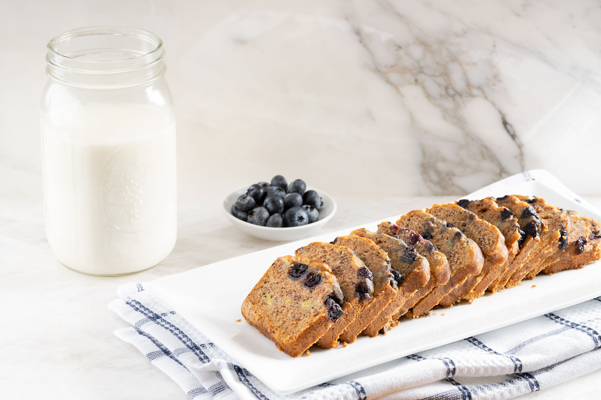
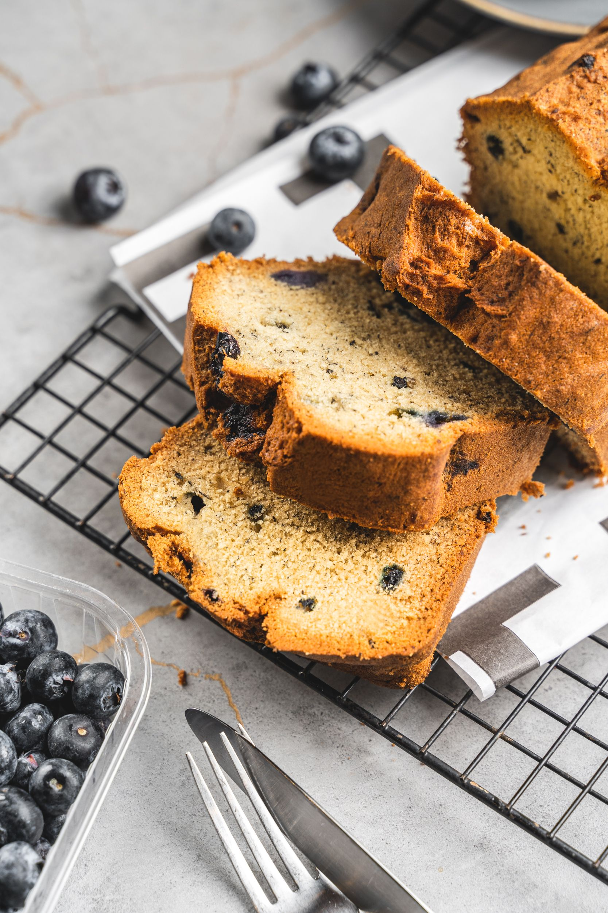

Lemon Blueberry Pull-Apart Bread

Description:
You won't believe this lemon blueberry pull-apart bread takes only 5 ingredients!
Jammy and sweet, with lemon curd and
blueberry preserves, it's easy to see why this flavor combination is a classic.
Who knew that using refrigerator biscuit mix would be this awesome!
Ingredients:
- 1 (16.3 ounce.) can refrigerated biscuits, such as Pillsbury® Grands! Flaky Layers
- 1/2 cup blueberry preserves
- 1/2 cup jarred lemon curd
- 1/2 cup confectioners sugar
- 1 tablespoon whole milk
Instructions:
-
Preheat the oven to 350 degrees F (180 degrees C). Spray an 8 1/2x4 1/2-inch loaf pan with cooking spray and line with
parchment paper, leaving a 2-inch overhang on 2 sides. Split biscuits in half horizontally, creating 16 biscuit halves.
Spread blueberry preserves evenly over 1 side of 8 of the biscuit halves. Spread lemon curd evenly over 1 side of
remaining 8 biscuit halves.
-
Stack 4 of the biscuit halves, alternating between preserves and lemon curd (ensuring each filled side faces the plain
side of the next biscuit); repeat stacking with remaining 12 biscuits to yield 4 stacks. Quickly place stacks in
prepared loaf pan so that biscuits are standing straight up.
-
Bake in the preheated oven until well browned and a wooden pick inserted into the center of biscuit comes out clean,
about 50 minutes, loosely tenting with aluminum foil halfway through baking. Let cool in pan for 10 minutes.
-
Using parchment paper as handles, carefully lift bread from pan; discard parchment. Stir together sugar and milk in a
small bowl; drizzle evenly over bread. Serve warm.

Home